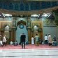
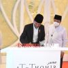
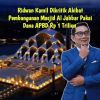

Direktori Data Masjid Kota Depok
Berita Seputar Kegiatan Mesjid di Depok
Qiyamulail & muhasabah

Dalam rangka Refleksi Akhir Tahun, masjid Al-Huda menyelenggarakan Kajian-kajian, Qiyamulail & Muhasabah.
Peresmian Masjid

Presiden RI Joko Widodo meresmikan Masjid At-Thohir yang terletak di daerah Tapos
Pembangunan Masjid Al jabbar menelan Biaya ?

Masjid Raya Al Jabbar yang baru diresmikan Gubernur Jawa Barat Ridwan Kamil menelan anggaran Rp 1 triliun. Rencana pembangunannya sejak 2017